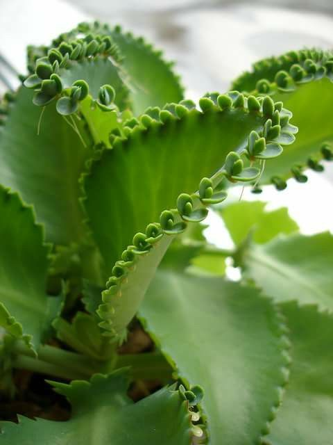

Overview
Botanical Name: Bryophyllum pinnatum (Lam.) Kurz., Bryophyllum calycinum
Family: Crassulaceae (Parnabija kula)
Systemic Classification:
- Kingdom: Plantae
- Division: Magnoliophyta
- Class: Magnoliopsida
Vernacular Names
- English Name: Air Plant, Cathedral Bells, Life Plant, Miracle Leaf, Goethe Plant
- Hindi Name: Airavati, Pathacharuti
- Unani Name: Jhakme Hayat
- Telugu Name: Ranapalaku
- Bengali Name: Koppata
- Gujarati Name: Ghaimari
- Marathi Name: Panfuti
Habitat and Morphology
Parnabeeja is a small shrub growing up to a height of 1-4 feet and is found abundantly in the warm and moist parts of central and eastern India. This plant is native to Madagascar.
It is not mentioned in any Samhitas of Ayurveda like Charaka, Sushruta, Astanga Sangraha/Hridaya or in any popular Nighantus like Dhanwantari Nighantu or Bhava Prakasha.
Medicinal Qualities
- Guna (Qualities): Laghu (Light to digest), Rooksha (Dryness)
- Rasa (Taste): Kashaya (Astringent), Amla (Sour)
- Vipaka (Taste Conversion After Digestion): Madhura (Sweet)
- Veerya (Potency): Sheeta (Coolant)
- Effect on Tridosha: Kapha-Pitta Hara (Reduces vitiated Kapha and Pitta dosha), Raktastambhana (Helps in blood coagulation), Vranaropana (Aids in wound healing)
- Pharmacological Action: Diuretic
Useful Part and Dosage
- Useful Part: Leaf
- Dosage: Fresh juice (10-20 ml), before or after food. Leaf paste is used externally.
Synonyms
- Patrabija – New plant originates from leaves
- Raktakusuma – Flowers are reddish purple
- Chatushkonaka – Stems are obtusely four-angled
Chemical Composition
- Glycosides of Quercetin and Kaempferol
- Fumaric Acid
- Anti-fungal properties